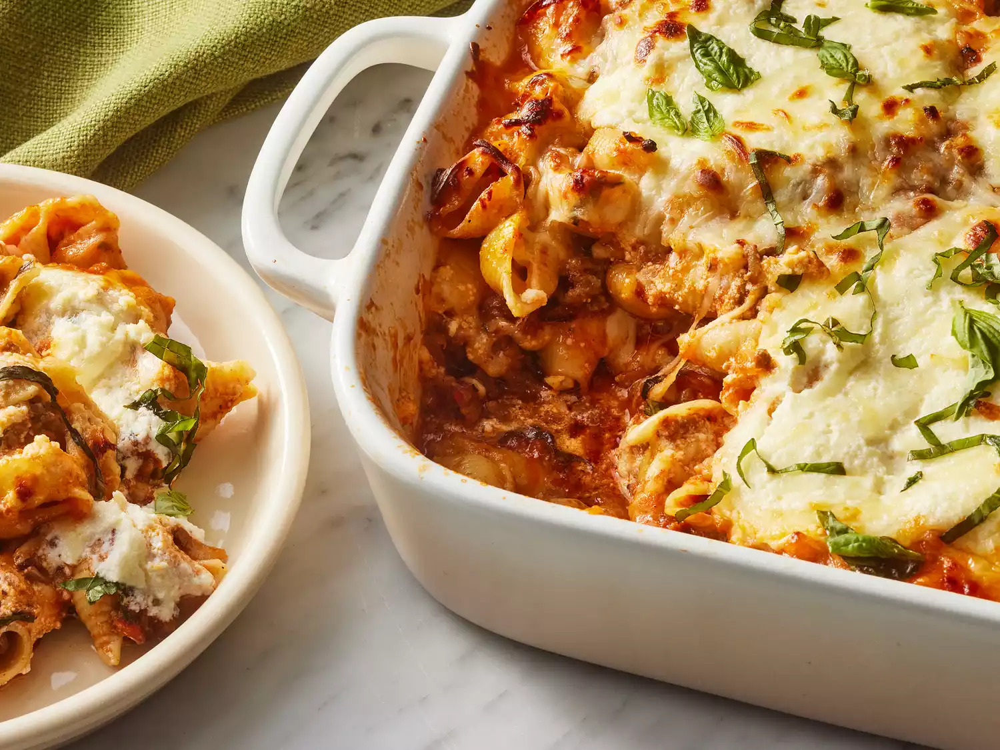

Lasagna Casserole

Description
This is a recipe for lasagna casserole that I found on All Recipes. It is sure to become a staple in your meal rotation
Ingredients
- 1 (12 ounce) box jumbo pasta shells
- 1/4 cup extra-virgin olive oil, divided
- 1 pound ground sirloin
- 1 pound Italian sausage, hot or sweet
- 1 small yellow onion, finely chopped
- 6 cloves garlic, thinly sliced
- 1 (26 ounce) jar prepared marinara sauce
- 1 cup loosely packed fresh basil
- 1/2 teaspoon crushed red pepper flakes
- 1 (15 ounce) container whole milk ricotta cheese
- 1/4 cup finely grated Parmigiano-Reggiano plus additional for serving
- 1/4 cup heavy whipping cream
- 1 teaspoon kosher salt
- 1 1/2 cups shredded part-skim mozzarella cheese
- cooking spray
Steps
- Preheat oven to 375
- Cook pasta shells
- Cook sausage and sirloin
- Add onion and garlic
- Stir together ricotta, Parmigiano-Reggiano, cream, and salt in a bowl
- assemble
- bake for 30 minutes